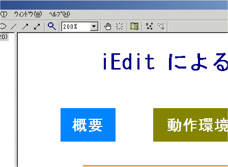
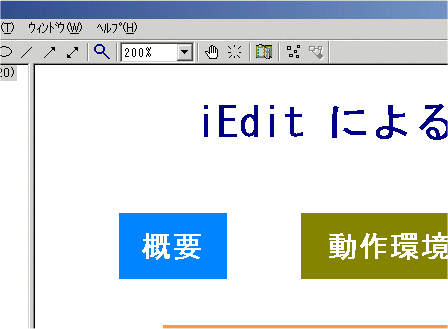
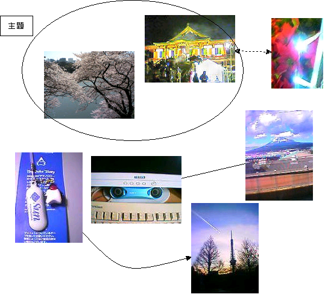

ネットワークビューの機能
ネットワークビューにおける拡大縮小機能
ネットワークビューには、任意倍率設定機能(拡大・縮小機能)がありましす。大きい図を縮小して全体を俯瞰したり、拡大して見やすくしたり、状況に合わせて使い分けてください。
 

ツールバーのドロップダウンリストで表示倍率を指定できます。また、ドロップダウンから「全体表示」を選ぶと、現在のウィンドウサイズに収まるようにネットワークビュー全体の倍率を調整します。
ルーペツールを使うと、マウスの左ボタンクリックで拡大、右ボタンクリックで縮小します。ホイールマウスを使っている場合は、ホイールの回転に合わせて拡大縮小します。
クリップボードへの図のコピー
ネットワークビューをアクティブにした状態で、「編集」⇒「コピー」を 実行すると、選択されているノードをクリップボードにコピーします。複数選択が可能です。コピーしたノードは、任意の階層のノード配下に貼り付けることができます。複数ノードをコピーした場合は、ノードの位置関係もコピーされます。クリップボードには、選択されているノードのイメージが拡張メタファイルとしてコピーされます。
ネットワークビューでノードが選択されていない場合は、クリップボードにネットワークビューの全体図のイメージがクリップボードに拡張メタファイルとしてコピーされます。メタファイルの原点の座標はネットワークビューの原点となります。これは、「ネットワーク」⇒「図のコピー」を実行した場合と同じです。
ネットワークビューの図を画像ファイルに出力することもできます。インポート・エクスポートを参照してください。
芋づるモード
マウスのドラッグで、リンクによって関連付けられたノードをずるずると芋づる的に引っ張って移動させることができます。Ctrlキーを押しながらマウスでノードをドラッグしてください。
このようにリンクとノードが交錯している図があります。

普通にノードをドラッグすると、ひとつのノードが移動するだけです。

Ctrlキーを押しながらドラッグすると、関連するノードも芋づる的についてきます。

リンクでつながっていれば、どんな位置にあっても引っ張ってきますし、関係のないノードの位置は変わりません。デモの例では、このように、「numbers」関連と「operating system」関連のノードのリンクは動かさずに、「programming language」関連のノードだけを集めてくることができます。

メタファイルを使用したノードの作成
ノードのシェイプとしてメタファイルを指定できます。クリップボード経由で、メタファイル、ビットマップをシェイプとして貼り付けることができます。

巨大なビットマップを多数貼り付けると、ファイルサイズが増大し、描画も遅くなるのでご注意ください。ビットマップはサムネイル程度の画像にとどめ、ドロー系のツールからメタファイルをコピーして貼り付けるのがいいと思います。

よく使うメタファイルを管理するダイアログを用意しました。Ctrl+M キーで起動できます。モードレスダイアログになっているので、表示したまま通常の操作が可能です。カテゴリ別にメタファイルを登録して、管理できます。拡張メタファイル(EMFファイル)を直接取り込むことが可能です。また、クリップボードからの貼り付けもできます。ネットワークビューにシェイプをドロップしたり、ネットワークビュー上のノードのメタファイルを取り込んだりする機能もあります。 メタファイルは、拡張子iesのファイルとして管理されます。カテゴリ毎に20個までメタファイルが登録でき、10カテゴリで最大200個のメタファイルを登録できます。また、iesファイルを変えれば、いくらでもメタファイルの登録が可能です。Visioのステンシルのように使えます。
このUIは、今はなきドキュメントプロセッサー「龍文」(エヌ・ケー・エクサ(現エクサ)製)を真似たものです。
アルバトロスさんがオリジナルのシェイプファイルを公開されています。iEditでフローチャートやUMLっぽいダイアグラムを描くのに便利です。

入力文字数・フォントサイズ等によるノードのサイズ・スタイルの自動調整
ネットワークビューでノードを作成する際に、入力した文字列や設定したフォントサイズにより、ノードの大きさが自動調整されます。ノードの編集の際にも、現在表示しているノードの大きさに文字が入りきらない場合はリサイズされます。
ノードのラベルに改行が含まれる場合、最長の行の長さと行数に合わせてノードをリサイズします。改行が含まれていない場合は、縦:横が2:1になるようにリサイズします。
ノードラベルの表示方法をの1行表示から複数行表示に変更した場合、入力した文字数が50文字(全角の場合25文字)を超えた場合は、自動で折り返し処理をします
文字数が少ない場合は、ノードサイズ調整は行われません。文字数にあわせてノードサイズをフィットさせたい場合は、ノードを右クリックして、コンテキストメニューから「リサイズ」を実行することで可能です。


リサイズ機能をオフにするには、メニュー⇒「ツール」⇒「オプション」⇒「ノード」タブで、「ノードの自動リサイズをしない」チェックボックスをチェックします。
ノードのテキストをツールチップとして表示
ノードのテキストをネットワークビューでツールチップとして表示する機能です。マウスカーソルをノードの位置にあわせると、ノードのテキストデータをツールチップとして表示します(長い場合は切り詰めます)。ノードをクリックしてテキストビューを見なくても、内容の確認ができるというメリットがあります。また、ネットワークビューに長い文書のノードを置きたくないが、補助的な内容を表示したい場合などに利用できます。